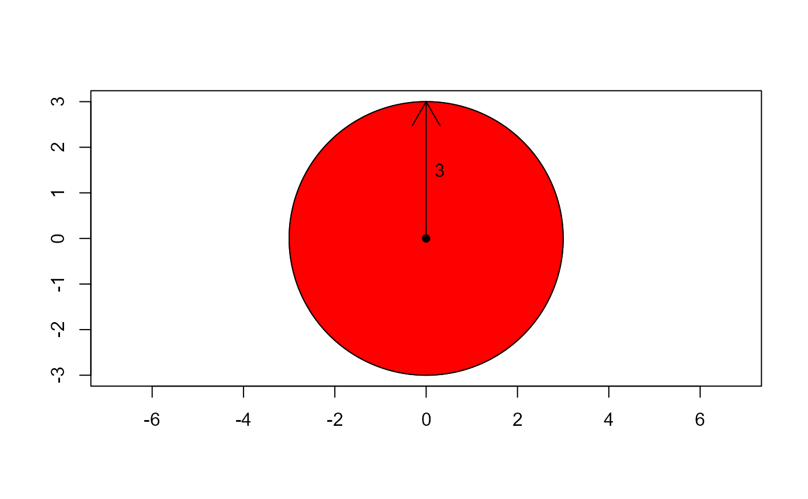
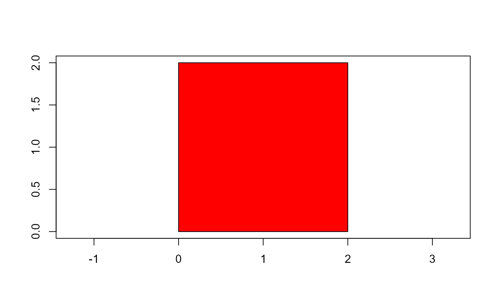
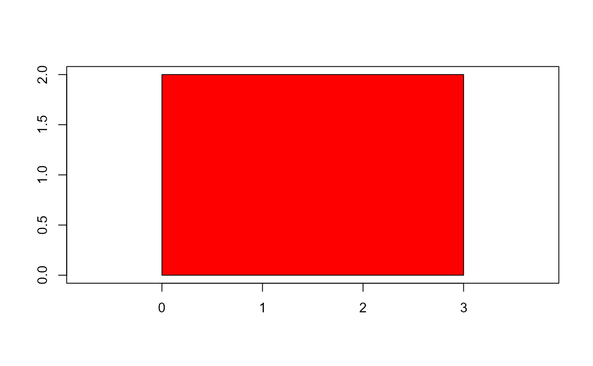
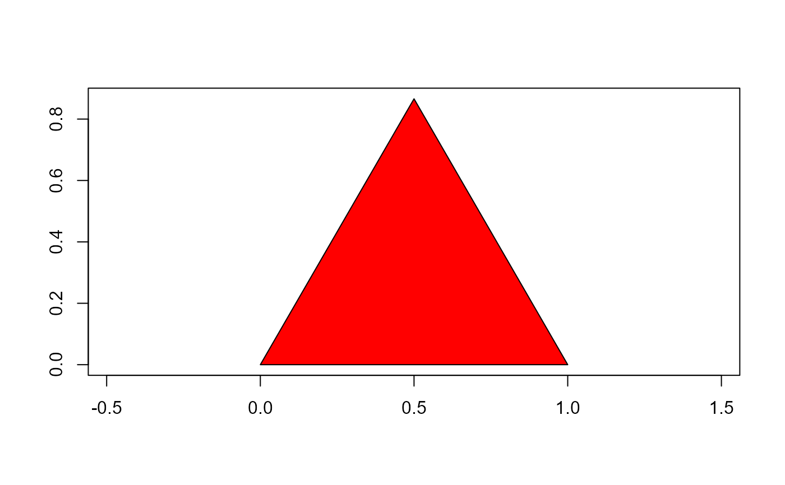
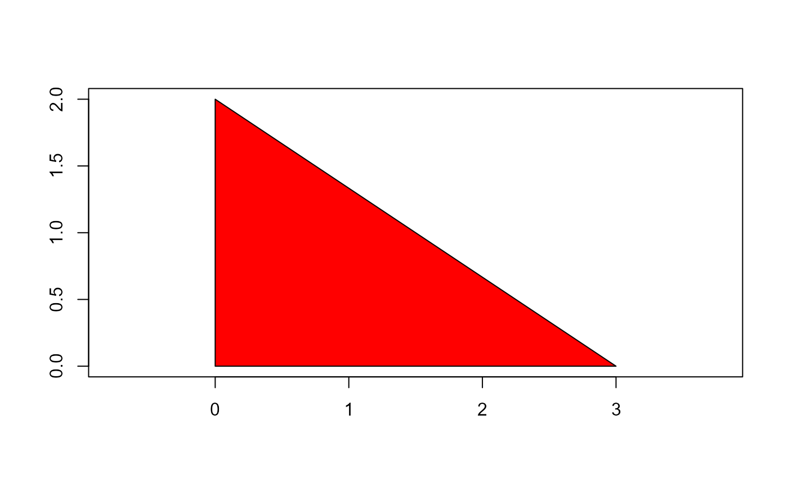

The functions computes the coordinates of common shapes such as squares triangles, rectangles and circles.
draw_circle()Draws a perfect circle with a desired radius.draw_square()Draws a square with a desired side.draw_rectangle()Draws a rectangle given two desired sides.draw_trian_equi()Draws an equilateral triangle with a desired side.draw_trian_rect()Draws a triangle rectangle given two cathetus.draw_n_tagon()Draws polygons withnsides
Usage
draw_circle(radius = 1, n = 1000, plot = TRUE)
draw_square(side = 2, plot = TRUE)
draw_rectangle(side1 = 2, side2 = 3, plot = TRUE)
draw_trian_equi(side = 2, plot = TRUE)
draw_trian_rect(cat1 = 1, cat2 = 2, plot = TRUE)
draw_n_tagon(n, plot = TRUE)Arguments
- radius
The radius of the circle. Defaults to
1.- n
The number of sides in the
n-tagon.- plot
Plots the result? Defaults to
TRUE.- side
The side of the square/equilateral triangle. Defaults to
2.- side1, side2
The first and second sides of the rectangle. Defaults to
2and3, respectively.- cat1, cat2
The first and second cathetus of the right triangle. Defaults to
1, and2, respectively.
Examples
########## An example of a circle ##########
library(pliman)
radius <- 3
circ <- draw_circle(radius = radius)

# area
pi * radius ^ 2
#> [1] 28.27433
poly_area(circ)
#> [1] 28.27415
# perimeter
2 * pi * radius
#> [1] 18.84956
poly_perimeter(circ)
#> [1] 18.84952
############ An example of a square ############
side <- 2
(square <- draw_square(side = side))

#> x y
#> 2 0 2
#> 3 2 2
#> 4 2 0
#> 5 0 0
# area
side ^ 2
#> [1] 4
poly_area(square)
#> [1] 4
# perimeter
side * 4
#> [1] 8
poly_perimeter(square)
#> [1] 6
############ An example of a rectangle ############
side1 <- 2
side2 <- 3
(rect <- draw_rectangle())

#> x y
#> 2 0 2
#> 3 3 2
#> 4 3 0
#> 5 0 0
# area
poly_area(rect)
#> [1] 6
# perimeter
poly_perimeter(rect)
#> [1] 8
########### An example of an equilateral triangle #########
side <- 1 # defaults
(trig <- draw_trian_equi(side = side))

#> x y
#> 2 1.0 0.0000000
#> 3 0.5 0.8660254
#> 4 0.0 0.0000000
### area (b*h / 2)
# height of the triangle
(h <- (side * sqrt(3)) / 2)
#> [1] 0.8660254
side * h / 2
#> [1] 0.4330127
poly_area(trig)
#> [1] 0.4330127
### perimeter (side * 3)
poly_perimeter(trig)
#> [1] 2
########### An example of a rectangle triangle ##########
cat1 <- 2
cat2 <- 3
(df <- draw_trian_rect(cat1, cat2))

#> x y
#> [1,] 0 0
#> [2,] 3 0
#> [3,] 0 2
#> [4,] 0 0
# area
(cat1 * cat2) / 2
#> [1] 3
poly_area(df)
#> [1] 3
# perimeter
cat1 + cat2 + sqrt(cat1^2 + cat2^2)
#> [1] 8.605551
poly_perimeter(df)
#> [1] 8.605551
############ An creating shapes with n sides ############
side <- 2
(square <- draw_square(side = side))
#> x y
#> 2 0 2
#> 3 2 2
#> 4 2 0
#> 5 0 0
# area
side ^ 2
#> [1] 4
poly_area(square)
#> [1] 4
# perimeter
side * 4
#> [1] 8
poly_perimeter(square)
#> [1] 6